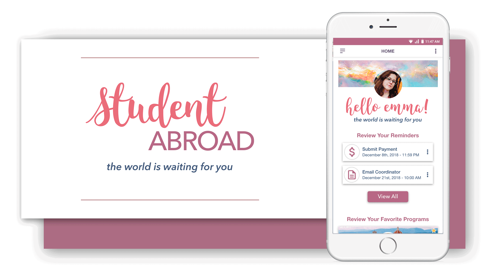
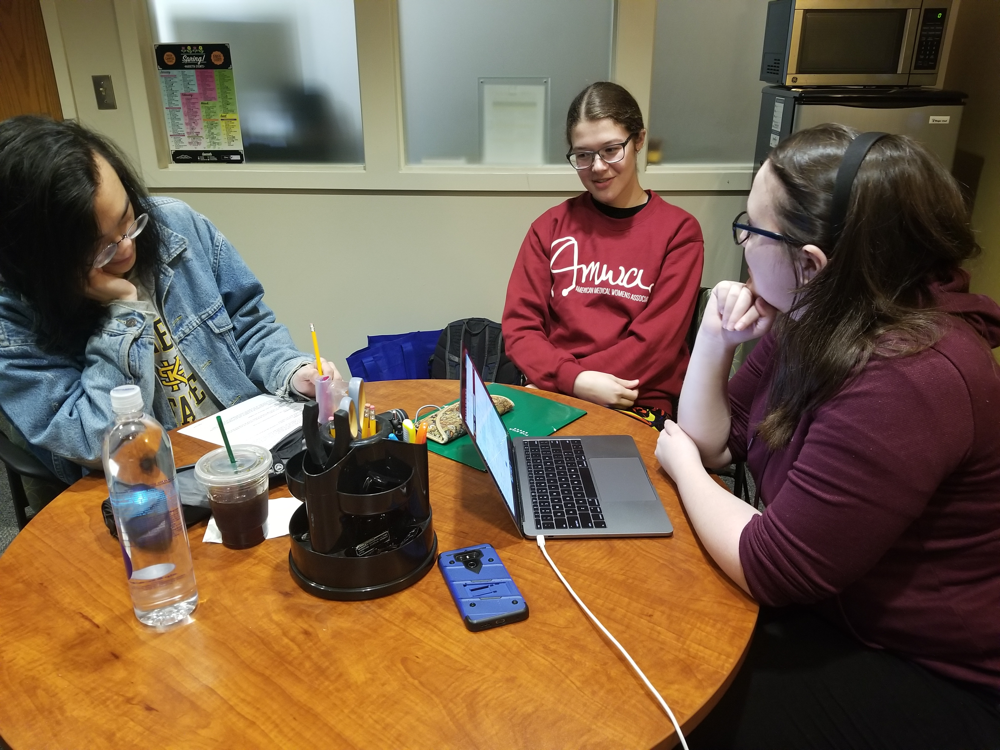
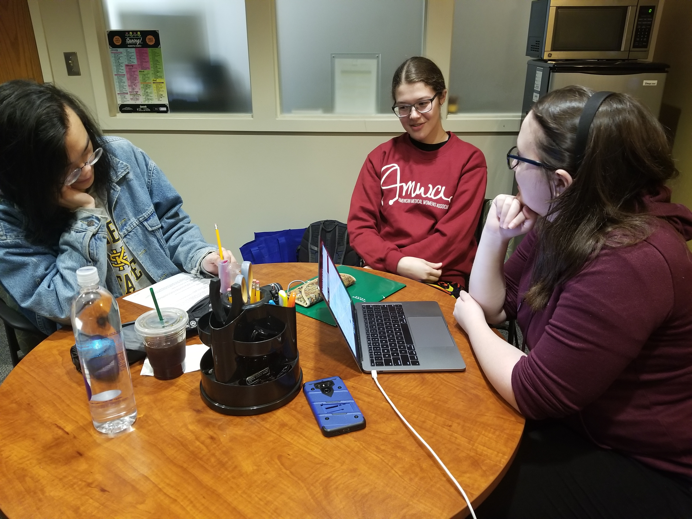

Student Abroad
Goal Directed Design Project

Role:
Project Timeline:
Interaction Designer
10 Weeks (March 2019 - May 2019)
| Role: | Project Timeline: |
|---|---|
| Interaction Designer | 10 Weeks (March 2019 - May 2019) |
Premise
For my Interaction Design I class project, my group sought out to create a mobile app catered to students who were in process of going to study abroad.
The goal of this project was to carry out a Goal-Directed Design project. Goal-Directed Design is a process that follows a series of steps including creating personas,
developing use cases/scenarios, prototyping to create a product, and reiterating on your ideas as you test your product.

Student Abroad Final Demo
Meet Our Team

|
||
|---|---|---|
| Brianna McBride | Henry Pham | Brian Ra |
| Team Lead | UX/UI Designer | UX/UI Designer |
Research
In this project, we used the goal-directed design method. We started our process by doing a literature review, competitive analysis, interviewing a subject matter expert, and constructing our persona hypothesis. Our goal was to create an application that would improve the overal user experience of going through the study abroad process in area where competitors were lacking.
Table showing where competitors lack in features
After looking through our competitors, we started looking at what our potential ideal user would look like. To find this information, I researched statistics on people who go abroad. Once we narrowed down our general demographic, we sought out to interview people we thought matched our potential users.
 

We conducted 5 user interviews, 2 students who had already gone abroad, 2 who were considering going, and 1 who was currently abroad. We also met with a subject matter expert, Cassandra Danekes who is the Operations Coordinator & Gilman Scholarship Certifying Advisor for the KSU Education Abroad Department. Her information was incredibly valuable for it gave us clear demographics and frustrations that a user could potentially face that we had not thought of.
Modeling
Once our team felt enough research was gathered, we moved onto affinity mapping our ideas out to create our personas (artificially-created users through actual research).
We grouped similar ideas and found the following:
- Demographic (age, race, sex, etc.)
- User Wants and Needs (finding programs/scholarships, a place to organize important documents)
- Frustrations (introduction to finding programs can be cumbersome, finding scholarships is very time consuming due to no comprehensive list available to users)
- Goals (keep track of deadlines, find programs that fit their wants/needs)
Meet our Personas
Our personas were created with the research we gathered in mind first. We wanted to keep everything as realistic as possible in order to create user stories using our personas.
Emma Russell
- Junior Art History major.
- She dreams of taking art classes in Italy and has always wanted to go abroad.
- She’s a low-income student with plenty of debts, so she’s intent on getting scholarships.
Goal:
She doesn't know what program options are out there and is overwhelmed by the amount of research she needs to do, so she’s looking for something to help with the process.
Sienna Harris
- Junior Art History major.
- She dreams of taking art classes in Italy and has always wanted to go abroad.
- She’s a low-income student with plenty of debts, so she’s intent on getting scholarships.
Goal:
She doesn't know what program options are out there and is overwhelmed by the amount of research she needs to do, so she’s looking for something to help with the process.
Liam Turner
- Junior Art History major.
- She dreams of taking art classes in Italy and has always wanted to go abroad.
- She’s a low-income student with plenty of debts, so she’s intent on getting scholarships.
Goal:
She doesn't know what program options are out there and is overwhelmed by the amount of research she needs to do, so she’s looking for something to help with the process.
Requirements
We created a list of persona expectations/user needs to give us better insight on how to construct our context scenarios (user stories and how our personas will interact with our app in their daily lives).
User Expectations & Needs: App Features
- Program List
- Scholarship List
- Reminders
- Research Checklist
- Favorites
- Document Storage
- Profile Page
- Settings
After we wrote down features users would expect out of our product, we moved onto creating key path scenarios which helped us begin to map out our app.
Framework
Once our personas had set goals and expectations in relation to our product, we began site-mapping and low-fidelity prototyping on whiteboards.

We found that having a scenario to look back on for interaction hierarchy purposes made our decisions hold validation. We were able to explain to each other why/why not certain arrangements could potentially confuse users.
White board prototyping allows for quick edits and fast visualization
Once we got an idea of the hierarchy of the navigation bar, we started to sketch low-fidelity prototypes. Our group took turns explaining their individual sketches/ideas, and when we felt we were all pleased with the results and how they match our persona's goals/expectations, we sketched a final design to reference back to once we started medium/high-fidelity prototyping.